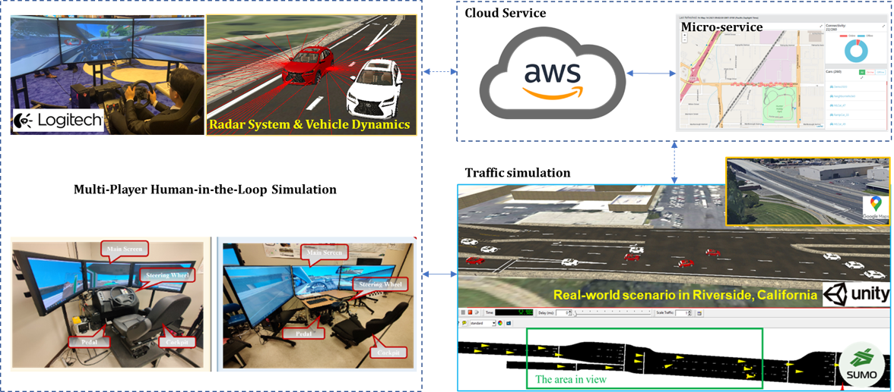

Multiplayer Human-in-the-Loop Simulation Platform
Project Overview
The Multiplayer Human-in-the-Loop Simulation Platform is an innovative research project that combines advanced traffic simulation with real-time human interaction. This platform enables multiple users to simultaneously participate in traffic scenarios, providing valuable insights into human behavior and decision-making in complex traffic situations.

System Architecture of the Multiplayer Human-in-the-Loop Simulation Platform
Platform Demonstration
Multiplayer Human-in-the-Loop Simulation Demo
Unity-SUMO Integration for Real-time Traffic Simulation
Human-in-the-Loop Simulation Interface
Key Features
- Real-time multiplayer interaction in traffic scenarios
- Integration of SUMO traffic simulator for background traffic with algorithms
- Unity game engine for realistic vehicle dynamic model, human-in-the-loop operation, and visualization
- Synchronized simulation environment for multiple participants
- Data collection and analysis of human driving behavior
- Customizable traffic scenarios and environments
- Network-based architecture for distributed simulation
Research Impact
This platform contributes to:
- Understanding human behavior in complex traffic situations
- Development and validation of autonomous driving algorithms
- Training and evaluation of AI-based traffic management systems
- Research in human-machine interaction in transportation
- Study of collective behavior in traffic scenarios